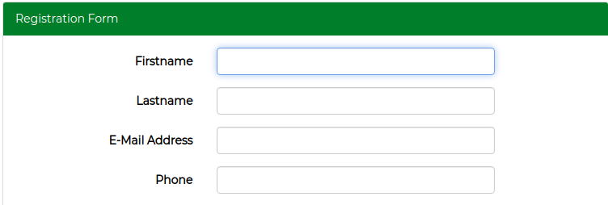
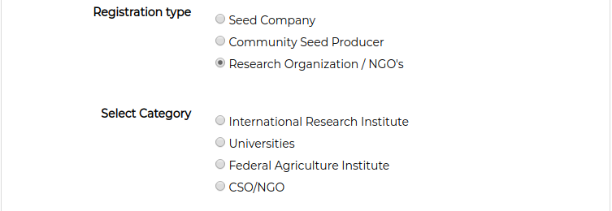
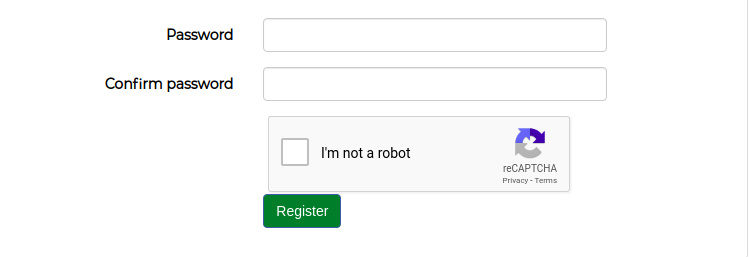
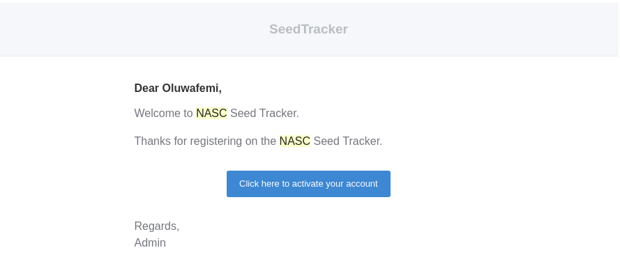
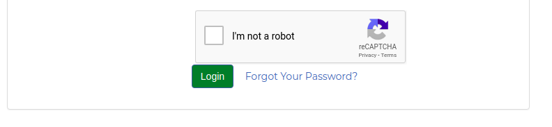
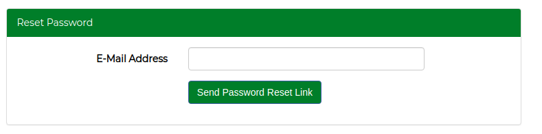
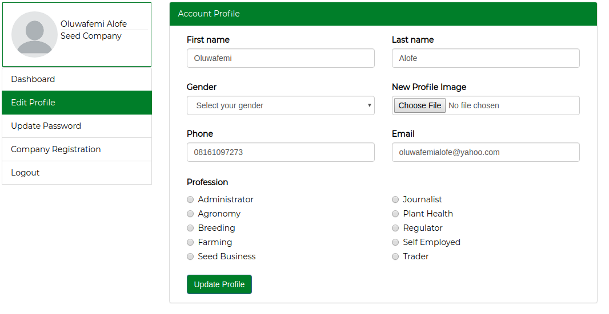
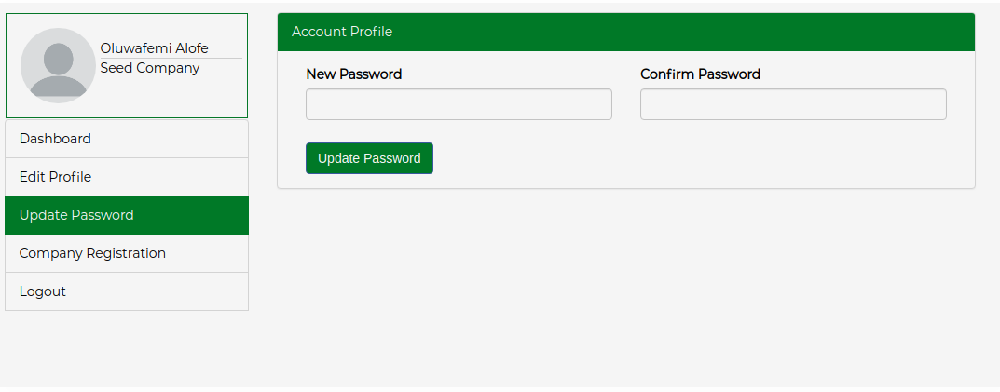
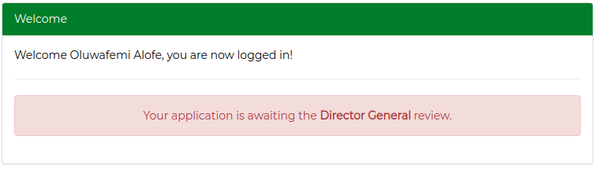
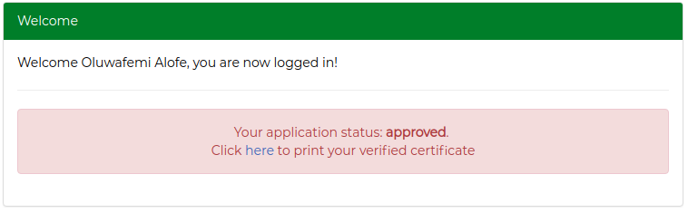

To sign up on the National seed tracker platform. Visit the registration page, provide all details on the form. Enter your firstname, lastname, active email address and phone number we can always reach you on
Choose your registration type, if you are a Seed Company, Community Seed Producer or Research Organization/NG. As a Seed Company, you need to select your category.
Or Research Organization/NGO,
If this is the first time you are creating an account on the National seed tracker platform, select No or Yes if you once created an account before and as been issued a certificate on this platform.
Finally, make sure you enter a secure password for you account, a combination of text and numbers is advised. Carefully confirm your password, check the recaptcha box and click on the submit button to create an account.
After account registration, an email with subject Welcome To Seed Tracker will be sent to email provided during registration. click on the button that says, click here to activate your account
To reset your password, visit the login page. Click on the Forgot Yor Password link near the login button, enter your registered email address and click the Send Password Reset Link to receive a link to reset your password.
 Once you are logged in into your account, on the left side of your dashboard, you will find the Edit Profile menu. You can edit your personal details and upload your profile picture
Login to your dashboard and click on the update password menu to update your password. Note that combination of letters and number is advisable for a secured password.
Your application will be reviewed by the NASC Administrative and the NASC DG. In either case, your applications can be Queried, Accepted or Rejected. You will always be notified through your registered email about your application process.
After the NASC DG approval you will be provided a link on your dashboard to print your certificate.
